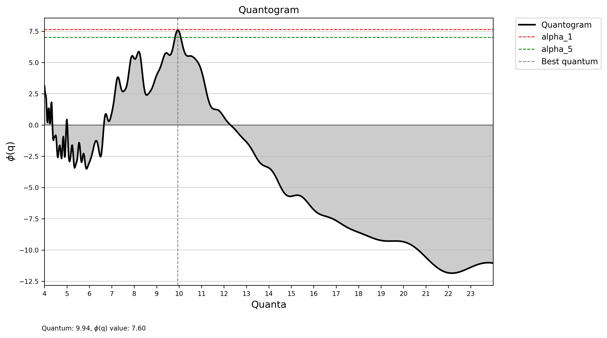
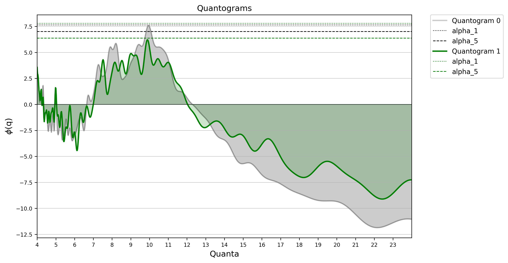

CQArcheo
CQArchaeo is a simple package that allows testing a numerical dataset with the formula established by Kendall (1974).
Introduction and motivations
The purpose of the analysis is to determine whether a numerical dataset exhibits a recognizable system of multiples based on a fundamental unit (quantum). While widely employed in metrological studies of the ancient world due to its peculiarities, its applications can be extended to various fields.
To conduct the analysis, a sample of numerical data (integers or floats) within a predefined range is to set.
Define sample range
The sample range to be tested with CQA should encompass a significant portion of the entire dataset. However, it is crucial to avoid an excessively wide range to prevent unreliable results (Ialongo, Lago 2021). When the sample size is large enough, it is possible to create multiple ranges and perform the analysis on various sub-samples.
Defining the Range and Step between Quanta
The range and step between quanta in CQA refer to the specification of the interval of values and the increment between quantum units to be analyzed (e.g., by setting the range between 20 and 70 and the increment to 0.02, quanta such as 7, 7.02, 7.04,…, 70 will be tested). It is essential to carefully determine this range to strike a balance between encompassing a meaningful portion of the dataset and avoiding an excessively wide range for reliable results. Additionally, adjusting the step allows for flexibility in exploring different resolutions of the analysis. The hypothesis tested on this data interval is whether certain values (quanta) are suitable as fundamental units.
The Cosine Quantogram Analysis
\[\phi(q) = \sqrt{2/N}\sum_{i=1}^{n}cos(\frac{2\pi\varepsilon_i}{q})\]
The quantum \((q)\) with the highest \(\phi(q)\) value emerges as the prime candidate for serving as the fundamental unit of a numerical dataset. This result is obtained through the summation of \(\phi(q)\) values calculated using the Kendall formula for each individual element in the initial dataset. \(N\) represents the number of elements comprising the sample. In the initial part of the formula, \(\sqrt{2/N}\) is computed, giving rise to a vector utilized for all tests conducted on each element of the dataset for every quantum. \(\varepsilon\) is the remainder of the division operation between each element of the dataset and the tested quantum, and \(q\) represents the quantum under examination.
Plotting and evaluating results
At the conclusion of the analysis, each quantum will have the sum of the \(\phi(q)\) values obtained by applying the formula to each element of the initial dataset. The summed \(\phi(q)\) values are then plotted on the y-axis of a line plot, while the x-axis is composed of the quanta. If the dataset contains one (or more) promising candidate(s) to be the fundamental unit of a numerical series, the plot should exhibit a peak at the apex of a bell-shaped curve (see Usage for more details).
Monte Carlo simulation
However, the analysis can yield false positives. To address this, randomized datasets, compared to the original one, are generated and tested using CQA. Starting from a minimum of 100 simulated datasets, the analysis counts how many times it returns a higher \(\phi(q)\) value compared to the original dataset. Initially, a statistical significance threshold (\(\alpha\) level) is set, typically at 1 or 5%. If the highest \(\phi(q)\) from the original dataset surpasses the established threshold, it is highly probable that the sample is not subject to excessive measurement imprecisions, and the result is deemed reliable. Otherwise, it cannot be ruled out that the result is a false positive.
Installation
pip install cqarchaeoNow you can import the package in your Python scripts.
Usage
Perform a CQA analysis on a given dataset:
### Import the package
from cqarchaeo import CQAnalysis
### Perform the analysis
cqa = CQAnalysis(r'data.xlsx', min_value = 5, max_value = 200, min_quantum = 5,
max_quantum = 24, step = 0.02, Montecarlo_sim = True,
mc_parameter = 0.15, mc_iterations = 100)
### View the quantogram
cqa.plot_quantogram(figsize=(10, 6), plot_best_quantum=True,
dpi=300, plot_alpha_5=True)You get the following quantogram:

if you want to save the table with the results of the analysis, you can use the save_quanta method:
cqa.save_quanta(extension = 'xlsx')You can also compare multiple quantograms using the compare_quantograms function:
### Import the package
from cqarchaeo import CQAnalysis, compare_quantograms
### Perform the analysis
cqa1 = CQAnalysis(r'data1.xlsx', min_value = 5, max_value = 200, min_quantum = 5,
max_quantum = 24, step = 0.02, Montecarlo_sim = True,
mc_parameter = 0.15, mc_iterations = 100)
cqa2 = CQAnalysis(r'data2.xlsx', min_value = 5, max_value = 200, min_quantum = 5,
max_quantum = 24, step = 0.02, Montecarlo_sim = True,
mc_parameter = 0.15, mc_iterations = 100)
### Compare the quantograms
compare_quantograms(quantogram_list = [cqa1, cqa_2], figsize=(10, 6),
color_list=["black", "green"], alpha_list=[0.2, 1],
label_list=None, plot_montecarlo_bound=[True, True])You get the following plot:

API references
CQAnalysis
Perform a quantogram analysis on a given dataset (Class). Parameters
data (str)
path to the file to be imported. The file must be a csv or excel file with only one column.
min_value (int)
minimum number of data to be considered (default: 5).
max_value (int)
maximum number of data to be considered (default: 200).
min_quantum (int)
minimum quantum to be considered (default: 5).
max_quantum (int)
maximum quantum to be considered (default: 24).
step (float)
step between two consecutive quanta (default: 0.02).
Montecarlo_sim (bool)
if True, a Montecarlo simulation is performed (default: True).
mc_parameter (float)
parameter for the Montecarlo simulation (default: 0.15).
mc_iterations (int)
number of iterations for the Montecarlo simulation (default: 100).Returns
CQAnalysis objectExample
>>> from cqarcheo import CQAnalysis
>>> cqa = CQAnalysis(data = 'data.csv', min_value = 5, max_value = 200,
min_quantum = 5, max_quantum = 24, step = 0.02,
Montecarlo_sim = True, mc_parameter = 0.15, mc_iterations = 100)
>>> cqa
Quantum: 12.020, φ(q) value: 0.997 CQAnalysis.plot_quantogram
Plot a quantogram using matplotlib (class method).Parameters
figsize (tuple)
size of the figure (default: (10, 6)).
title (str)
title of the figure (default: "Quantogram").
plot_best_quantum (bool)
if True, the best quantum is plotted (default: True).
legend_outside (bool)
if True, the legend is placed outside the figure (default: True).
plot_alpha_1 (bool)
if True, the alpha_1 value is plotted (default: True).
plot_alpha_5 (bool)
if True, the alpha_5 value is plotted (default: True).
x_step (int)
step between x-axis ticks (default: 1).
fill_between (bool)
if True, the area under the quantogram is filled (default: True).
save (bool)
if True, the figure is saved (default: False).
dpi (int)
resolution of the figure (default: 300).
Returns
matplotlib figureExample
>>> from cqarcheo import CQAnalysis
>>> cqa = CQAnalysis(data = 'data.csv', min_value = 5, max_value = 200,
min_quantum = 5, max_quantum = 24, step = 0.02,
Montecarlo_sim = True, mc_parameter = 0.15, mc_iterations = 100)
>>> cqa.plot_quantogram(figsize=(10, 6), title = "Quantogram",
plot_best_quantum = True, save=False,
legend_outside = True,
plot_alpha_1 = True, plot_alpha_5 = True,
x_step = 1, dpi=300)CQAnalysis.save_quanta
Save the quantogram data to a file (class method).Parameters
extension (str)
extension ('xlsx' or 'csv') of the file to be saved (default: 'xlsx').Returns
NoneExample
>>> from cqarcheo import CQAnalysis
>>> cqa = CQAnalysis(data = 'data.csv', min_value = 5, max_value = 200,
min_quantum = 5, max_quantum = 24, step = 0.02,
Montecarlo_sim = True, mc_parameter = 0.15, mc_iterations = 100)
>>> cqa.save_quanta(extension = 'xlsx')compare_quantograms
Comprare multiple quantograms using matplotlib (function).Parameters
quantogram_list (list)
list of quantograms (CQAnalysis instances) to be compared.
figsize (tuple)
size of the figure (default: (10, 6)).
color_list (list)
list of colors (str) for the quantograms. If None, default colors will be used (default: None).
label_list (list)
list of labels (str) for the quantograms. If None, default labels will be used (default: None).
plot_montecarlo_bound (bool or list)
if True, the Montecarlo bounds are plotted (default: True).
If a list (including bool values) is passed, the bounds are plotted only for the quantograms in the list.
alpha_list (list)
list of alpha values (float) for the quantograms. If None, default values will be used (default: None).
plot_alpha_1 (bool)
if True, the alpha_1 value is plotted (default: True).
plot_alpha_5 (bool)
if True, the alpha_5 value is plotted (default: True).
fill_between (bool)
if True, the area between the quantogram and the x-axis is filled (default: True).
legend_outside (bool)
if True, the legend is placed outside the figure (default: True).
x_step (int)
step between x-axis ticks (default: 1).
save (bool)
if True, the figure is saved (default: False).
dpi (int)
resolution of the figure (default: 300).Returns
matplotlib figureExample
>>> from cqarchaeo import CQAnalysis, compare_quantograms
>>> cqa1 = CQAnalysis(...)
>>> cqa2 = CQAnalysis(...)
>>> compare_quantograms([cqa1, cqa2], figsize=(10, 6), color_list=["black", "red"],
label_list=["Quantogram 1", "Quantogram 2"],
plot_montecarlo_bound=True, alpha_list = None,
legend_outside=True, x_step = 1, save= True, dpi = 300)References
Kendall, D.G., 1974. Hunting quanta. Phil. Trans. R. Soc. Lond. A 276, 231–266. https://doi.org/10.1098/rsta.1974.0020
Ialongo, N., Lago, G., 2021. A small change revolution. Weight systems and the emergence of the first Pan-European money. Journal of Archaeological Science. https://doi.org/10.1016/j.jas.2021.105379